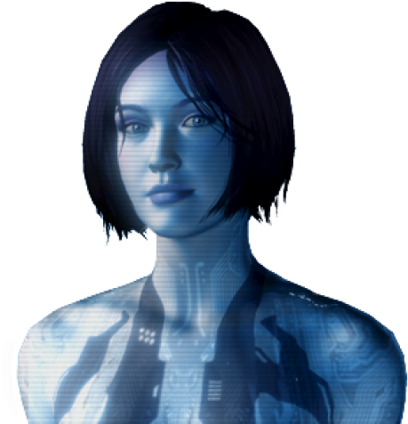

Halo 4: El Regreso del Jefe Maestro
Introducción
Halo 4 (2012) marca el inicio de la nueva trilogía "Reclaimer" y el regreso del Jefe Maestro después de 4 años en animación suspendida. Desarrollado por 343 Industries, el juego presenta gráficos revolucionarios, una narrativa más personal centrada en la relación entre el Jefe y Cortana, y la introducción de los enemigos Prometheans y el planeta Requiem.
La historia comienza cuando el Jefe Maestro despierta a bordo del UNSC Infinity para enfrentar una nueva amenaza: el Didacta, un antiguo guerrero Forerunner que busca destruir a la humanidad.
Misiones Principales
Dawn
El Jefe Maestro despierta en la nave Forward Unto Dawn, que ha estado a la deriva desde los eventos de Halo 3. Debe defender la nave de los Covenant y descubrir el misterioso planeta Requiem.
Requiem
El Jefe aterriza en Requiem y descubre que los Covenant han liberado al Didacta de su prisión. Primera aparición de los Prometheans y sus armas tecnológicas.
Forerunner
El Jefe explora las instalaciones Forerunner para encontrar una forma de detener al Didacta. Introducción de los Knights Prometheans y sus habilidades de teletransporte.
Infinity
El UNSC Infinity llega a Requiem y es atacado. El Jefe debe defender la nave mientras Cortana muestra los primeros signos de inestabilidad por ser una IA "rampante".

Reclaimer
El Jefe activa un artefacto Forerunner que revela el plan del Didacta: usar el Compositor para digitalizar a la humanidad. Combates épicos con el nuevo vehículo Mantis.
Shutdown
El Jefe y Cortana se infiltran en una instalación Forerunner para desactivar el escudo del Didacta. Cortana se sacrifica temporalmente para ayudar al Jefe.
Composer
El Jefe persigue al Didacta hasta la estación Ivanoff para evitar que use el Compositor en la Tierra. Cortana muestra un comportamiento cada vez más errático.
Midnight
La misión final donde el Jefe aborda la nave del Didacta para detenerlo definitivamente. Cortana hace el máximo sacrificio para salvar al Jefe y a la humanidad.
Personajes Clave
| Personaje | Rol | Importancia | Imagen |
|---|---|---|---|
| Jefe Maestro (John-117) | Protagonista | Despierta después de 4 años para enfrentar una nueva amenaza |  |
| Cortana | IA | En las etapas finales de su vida como IA, mostrando inestabilidad |  |
| El Didacta | Antagonista | Antiguo guerrero Forerunner que busca destruir a la humanidad | |
| Capitán Del Rio | UNSC Infinity | Comandante del UNSC Infinity que duda del Jefe Maestro | |
| Thomas Lasky | Oficial del UNSC | Antiguo cadete de Forward Unto Dawn que ahora sirve en el Infinity | |
| Librarian | Forerunner | Entidad Forerunner que ayuda al Jefe Maestro en Requiem |
Nuevas Armas, Vehículos y Enemigos
Rifle de Luz (Promethean)
Rifle de energía preciso que puede cargarse para disparos más potentes.
Disipador (Promethean)
Arma que dispara proyectiles de energía que ralentizan y dañan a los enemigos.
Pistola de Boltshot (Promethean)
Pistola que puede cargarse para un potente disparo a corta distancia.
Mantis
Mech humanoide armado con cañones automáticos y misiles.
Knights Prometheans
Enemigos élite que pueden teletransportarse y convocar armas.
Crawlers
Enemigos caninos que atacan en manadas y pueden escalar paredes.
Watchers
Unidades de apoyo que reviven Knights y desvían granadas.
Scattershot (Promethean)
Escopeta de energía con proyectiles que rebotan en superficies.
Facciones
UNSC
Fuerzas humanas lideradas por el UNSC Infinity. Incluye nuevos soldados y vehículos.
Unidades: Marines, Spartan-IVs, Mantis
Covenant Remanente
Facción separatista Covenant que adora a los Forerunners.
Unidades: Elites, Grunts, Jackals, Hunters
Prometheans
Constructos de guerra Forerunner activados por el Didacta.
Unidades: Knights, Crawlers, Watchers
Forerunners
Antigua raza que construyó los anillos Halo. Algunos ayudan, otros amenazan.
Personajes: Didacta, Librarian
Calaveras (Skulls)
Sistema de Calaveras en Halo 4
A diferencia de juegos anteriores, en Halo 4 todas las calaveras están desbloqueadas desde el principio. No es necesario encontrarlas en los niveles, solo activarlas desde el menú de opciones antes de comenzar una misión.
Efectos de las Calaveras Disponibles
- Iron: Reinicio de nivel al morir (sin checkpoints)
- Black Eye: Escudos solo se recargan con daño cuerpo a cuerpo
- Tough Luck: Enemigos esquivan ataques y nunca se rinden
- Catch: Enemigos lanzan más granadas
- Fog: Desactiva el sensor de movimiento
- Famine: Las armas contienen la mitad de munición
- Thunderstorm: Enemigos aparecen con rangos superiores
- Tilt: Los escudos enemigos son más resistentes
- Mythic: Enemigos tienen el doble de salud
- IWHBYD: Activa diálogos raros y divertidos
- Grunt Birthday Party: Grunts explotan en confeti con disparos en la cabeza
- Boom: Explosiones más grandes al morir
Para activar las calaveras en Halo 4:
- Selecciona "Campaña" en el menú principal
- Elige "Opciones de misión" antes de comenzar
- Selecciona las calaveras que deseas activar
- Comienza la misión con los modificadores activos
Las calaveras no afectan los logros en Halo 4, pero pueden hacer el juego significativamente más desafiante o divertido según la combinación utilizada.
Legado de Halo 4
Halo 4 marcó el inicio de una nueva era para la franquicia con:
- Nuevo motor gráfico: Gráficos significativamente mejorados
- Narrativa emocional: Enfoque en la relación Jefe-Cortana
- Spartan Ops: Misiones cooperativas episódicas que expanden la historia
- Multijugador mejorado: Sistema de progreso y personalización
- Armas Promethean: Nuevo arsenal con tecnología Forerunner
- Forerunners: Primera aparición física de esta antigua raza
El juego vendió más de 9 millones de copias y recibió elogios por su narrativa y presentación visual, aunque algunos criticaron los cambios en el multijugador.

El Sacrificio de Cortana
El momento más emotivo de Halo 4 ocurre al final, cuando Cortana se sacrifica para salvar al Jefe Maestro. Este evento:
- Marca el final de la IA tras 8 años de servicio (7 para ella por relatividad)
- Muestra el lado más humano del Jefe Maestro al perder a su compañera
- Establece los eventos para Halo 5 con fragmentos de Cortana sobreviviendo
- Representa el clímax de su deterioro por el "rampancy" de las IAs
Esta escena se considera una de las más memorables de toda la saga Halo.